2 기후와 경제의 상호작용
들어가며: 하얀 빙하가 검게 변하고 있다
읽을거리: “더러운 얼음”이 뒤덮은 히말라야
2026년 9월 뉴욕타임스는 “더러운 얼음이 히말라야의 재난을 부추기고 있을지 모른다(Dirty Ice Could Be Fueling Himalayan Disasters)”는 기사를 실었다. 한때 새하얗던 히말라야의 빙하 표면이 자동차 배기가스, 석탄발전, 공장에서 나온 오염물질로 점점 검게 뒤덮이고 있다는 내용이다. 네팔 랑탕처럼 경치 좋은 고산지대도 남아시아에서 가장 오염이 심한 지역들과 멀지 않아 예외가 아니다.
기사에 소개된 연구자들의 이야기는 이렇다. 컬럼비아대의 마르코 테데스코(Marco Tedesco)는 빙하가 점점 얇아지는 가운데 오염이 엄청난 영향을 미치고 있다고 지적했다. 뉴질랜드 오타고대의 아비라 센굽타(Abira Sengupta) 연구팀은 6년치 위성 자료를 분석해, 파키스탄 산업지대에서 날아온 블랙카본과 먼지가 고산 빙하까지 이동해 표면을 어둡게 만든다는 사실을 확인했다.
가장 흥미로운 증거는 뜻밖의 ’실험’에서 나왔다. 2020년 봄 코로나19 봉쇄로 공장과 교통이 멈추자 대기오염이 급감했다. 인도열대기상연구소(2023)는 이 시기를 일종의 자연실험(natural experiment)으로 활용했는데, 눈의 반사율이 회복되면서 히말라야의 눈 녹는 양이 최대 40% 줄어든 것으로 나타났다. 자연실험이란 연구자가 직접 처치를 가할 수 없을 때, 우연히 발생한 외부 충격을 마치 실험처럼 활용해 인과관계를 추정하는 방법이다. 이 사례에서 봉쇄는 ’오염을 갑자기 줄이는 처치’의 역할을 했다.
이 기사는 이 장에서 다룰 여러 주제 - 오염물질의 종류, 기후와 경제의 되먹임, 인과관계의 식별 - 를 한 번에 보여준다. 하나씩 풀어 보자.
국지적 오염물질과 전 지구적 오염물질
본격적인 이야기에 앞서 이 책 전체를 관통할 구분 하나를 먼저 짚어 두자. 모든 오염물질이 대기 중에서 똑같이 행동하는 것은 아니다.
| 구분 | 국지적 오염물질(local pollutants) | 전 지구적 오염물질(global pollutants) |
|---|---|---|
| 예 | SO₂, NOₓ, 미세먼지(PM2.5), CO | CO₂, CH₄, N₂O |
| 대기 체류시간 | 며칠 ~ 몇 주 | 수십 ~ 수백 년(누적되는 저량) |
| 피해 범위 | 배출원 인근 지역에 집중 | 전 지구, 배출원의 위치와 무관 |
| 정책 대응 | 지역 규제나 소송으로도 대응 가능 | 개별 국가·지역 규제만으로는 부족, 국제 협약 필요 |
이 구분은 왜 중요할까? 국지적 오염물질은 피해가 그 지역 주민에게 돌아가므로, 지역이 부유해지면 주민들이 규제를 요구해 스스로 줄어들 수 있다. 서울의 연탄 매연이 사라진 과정을 떠올려 보면 된다. 그러나 CO₂는 한 나라가 아무리 줄여도 다른 나라가 배출한 몫이 대기에 고스란히 쌓이므로, 누가 배출했든 전 세계가 그 피해를 나눠 진다. 배출하는 사람과 피해를 입는 사람이 지리적으로 완전히 분리되는 것이다. 이 구분은 뒤에서 환경 쿠즈네츠 곡선을 다룰 때, 그리고 4장에서 외부효과와 공공재를 다룰 때 다시 만난다.
경계에 걸친 오염물질: 블랙카본과 알베도
그런데 방금 그은 경계에 딱 들어맞지 않는 예외가 있다. 바로 블랙카본(black carbon), 즉 그을음이다. 취사용 화덕, 벽돌 가마, 디젤 엔진, 농작물 노천 소각에서 나오는 블랙카본은 대기 중에 며칠에서 몇 주만 머물기 때문에 정의상 국지적 오염물질에 가깝다. 그러나 바람을 타고 수백에서 수천 km 떨어진 눈과 빙하 표면에 내려앉으면 이야기가 달라진다.
핵심은 1장에서 만난 알베도(albedo), 즉 표면의 반사율이다. 표면이 밝을수록 햇빛을 더 많이 반사하고, 어두울수록 더 많이 흡수한다. 여름에 검은 옷이 흰 옷보다 더운 것과 같은 원리다. 갓 내린 눈은 알베도가 0.8-0.9로 햇빛의 대부분을 반사하지만, 블랙카본 입자가 쌓이면 알베도가 크게 떨어져 얼음이 흡수하는 열이 급증한다.
여기서 스스로를 강화하는 고리가 생긴다. 흡수된 열이 얼음을 더 빨리 녹이고, 녹은 자리에 블랙카본과 암석 부스러기가 농축되면 알베도가 한층 더 떨어진다. 그러면 더 많은 열을 흡수하고, 더 빨리 녹는다. 이처럼 어떤 변화가 그 변화를 더 키우는 방향으로 작용하는 과정을 양(+)의 되먹임(positive feedback)이라 한다.
최근 연구들은 이 효과가 상당히 크다는 것을 보여준다.
- Yang et al. (2025), Communications Earth & Environment: 2007-2016년 티베트고원 남부 빙하 질량손실의 약 33.7%가 남아시아에서 날아온 블랙카본 때문인 것으로 추정했다. 알베도 저하로 인한 직접적인 융해 증가와, 강설을 억제하는 간접 효과가 함께 작용한다. 향후 20년간 블랙카본 배출을 50-80% 줄이면 미래 빙하 손실의 최대 3분의 1을 막을 수 있다고 보았다.
- ICIMOD·Clean Air Fund 보고서(2025년 3월): 히말라야 중부의 한 빙하에서는 봄철(몬순 이전) 질량손실의 39%가 블랙카본 기여분이었다. 남아시아 블랙카본 배출의 약 60%는 취사용 고체연료 연소에서 나온다. 즉 원인은 대형 공장이 아니라 수억 가구의 부엌이다.
인과관계를 주장할 때의 주의
2026년 8월 히말라야 랑탕 리룽봉 인근에서 일어난 빙하 붕괴는 네팔·티베트에 대홍수를 일으켜 수백 명의 사망자를 냈다. 미국지질조사국(USGS)과 빙하 전문가들은 온난화로 인한 빙하와 영구동토의 약화를 배경으로 지목했다(1장 참고). 그렇다면 이 사건은 블랙카본 때문인가?
아직 이 특정 사건이 블랙카본 때문이라는 직접적 증거는 없다. “블랙카본이 많이 쌓인 지역에서 빙하가 더 빨리 녹는다”는 것과 “네팔의 이 특정 붕괴가 블랙카본 때문에 일어났다”는 것은 다른 수준의 주장이다. 앞의 주장은 많은 관측에서 얻은 평균적 관계이고, 뒤의 주장은 하나의 사건에 대한 원인 귀속이다. 다만 이 재해가 일어난 힌두쿠시·히말라야 지역이 블랙카본의 융해 가속 효과가 확인된 바로 그 지역이라는 점은 짚어볼 만하다. 상관관계와 인과관계, 평균적 효과와 개별 사건을 구분하는 습관은 이 책 전체에서 되풀이해 만나게 된다.
경제학자의 시각: 인센티브의 실패
한 공장이 강 상류에서 오염물질을 흘려보낸다고 하자. 공장주는 그 대가를 치르지 않지만, 하류의 어민과 주민은 고스란히 피해를 입는다. 경제학자의 눈에 기후변화는 이 오래된 이야기가 전 지구적 규모로 펼쳐진 것이다.
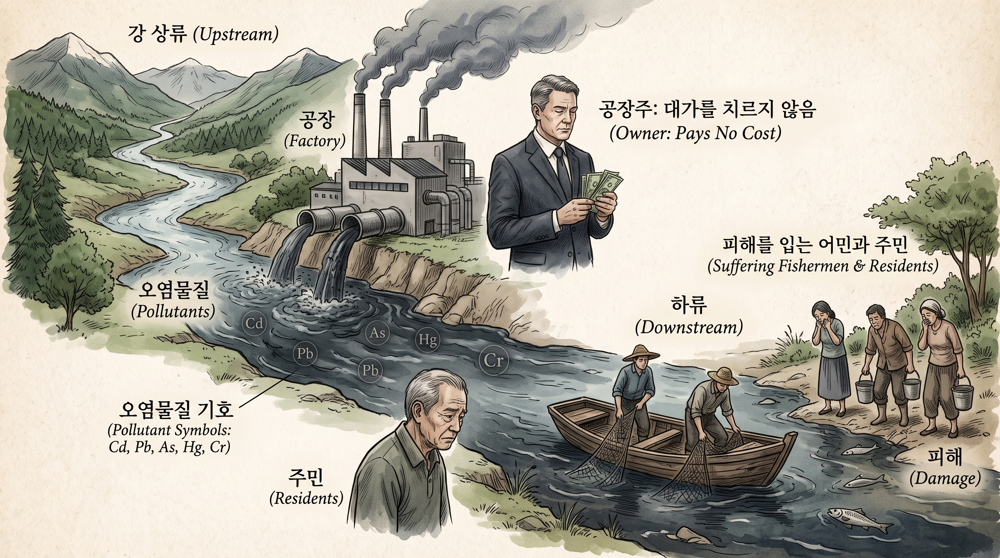
과학자에게 기후변화가 CO₂ 농도와 복사강제력, 기온 이상으로 기술되는 물리적 현상이라면, 경제학자에게 그것은 근본적으로 인센티브의 실패다. 화석연료를 태우는 사람은 그 이득을 온전히 누리지만, 그로 인해 발생하는 피해에는 가격이 매겨지지 않는다. 피해를 일으킨 당사자가 그 대가를 지불하지 않은 채, 피해 자체는 전 세계와 미래 세대에 흩어진다. 잘못된 가격 신호 앞에서 각자는 지극히 합리적으로 행동하지만, 그 합리적 선택들이 모여 집단적 재앙을 빚어낸다.
이 점을 가장 압축적으로 표현한 사람이 경제학자 니컬러스 스턴(Nicholas Stern)이다. 그는 2006년 영국 정부의 의뢰로 기후변화의 경제학을 집대성한 보고서 「스턴 리뷰(Stern Review)」(Stern 2007년)에서 기후변화를 “세계가 목격한 가장 큰 시장실패(the greatest market failure the world has ever seen)”라고 불렀다. 온실가스를 배출하며 우리가 치르는 가격이 그것이 기후에 입히는 피해를 반영하지 못한다는 뜻이다.
그러나 진단이 곧 절망을 뜻하지는 않는다. 시장실패라는 진단은 동시에, 잘못된 인센티브를 바로잡으면 문제를 풀 수 있다는 처방을 품고 있기 때문이다. 경제학은 기후변화가 몇 도의 온난화를 불러올지, 빙하가 언제 무너질지에 대해서는 답하지 못한다. 그것은 과학의 몫이다. 대신 경제학은 배출을 줄이는 데 드는 비용과, 그렇게 해서 줄어드는 피해, 즉 감축이 가져다주는 편익을 같은 저울에 올린다. 그리고 어느 수준까지 어떤 방법으로 배출을 줄이는 것이 사회 전체에 가장 이로운지를 따지고, 사람들이 스스로 그 선택으로 향하도록 이끄는 인센티브를 설계한다. 기후변화 경제학이 존재하는 이유가 바로 여기에 있다.
기후와 경제의 양방향 관계
순환적 관계 (I): 물리적 인과 사슬
이 책 전체를 관통하는 하나의 그림이 있다면 바로 이것이다. 인간의 경제활동은 온실가스를 배출하고, 배출은 기후를 변화시키며, 기후변화는 다시 생태계와 인간 사회에 영향을 미치고, 그 영향은 결국 경제 그 자체로 되돌아온다. 기후와 경제는 일방적인 인과관계가 아니라 닫힌 고리(feedback loop)로 연결되어 있다.
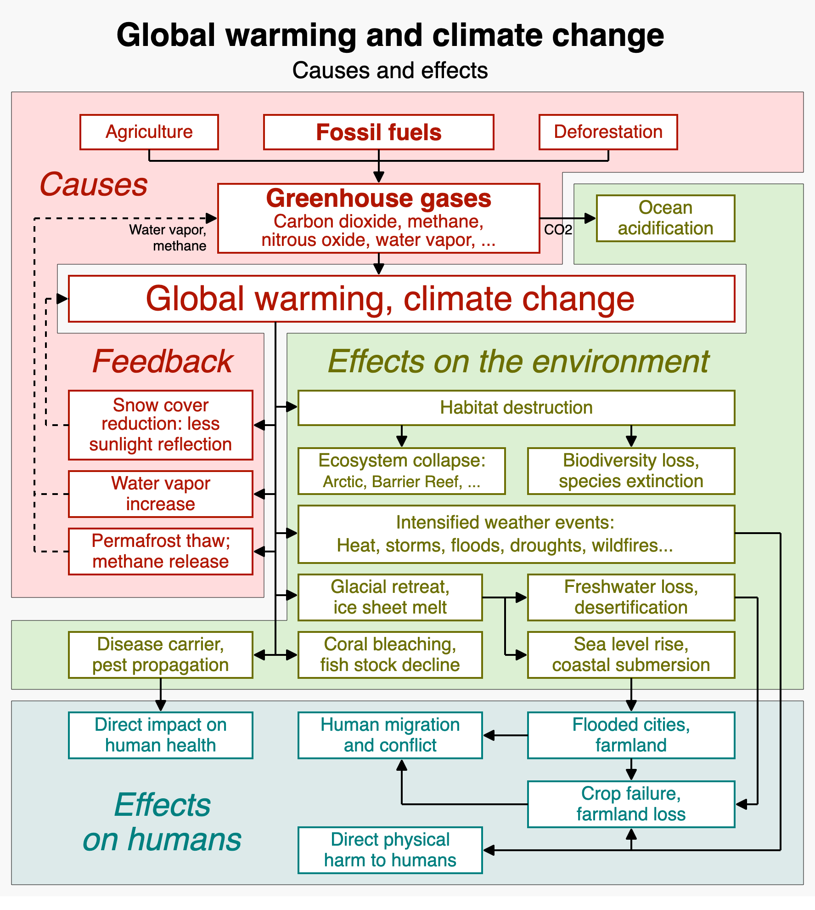
그림 2.2 를 세 부분으로 나누어 읽어 보자.
- 원인: 농업, 화석연료 연소, 산림 벌채가 온실가스(CO₂, CH₄, N₂O)를 배출한다.
- 되먹임: 눈덮임 감소, 수증기 증가, 영구동토 융해처럼 온난화를 스스로 증폭시키는 양의 되먹임이 작동한다.
- 영향: 생태계, 해수면, 식량 생산, 그리고 인간의 건강과 이주에 이르기까지 광범위하게 파급된다.
사례: 위험에 노출된 자산을 지킬 것인가, 옮길 것인가
‘영향’ 목록 가운데 이주 항목은 먼 나라 이야기가 아니다. 부산 해운대의 마린시티는 태풍이 올 때마다 파도가 방파제를 넘는 월파로 상가·도로·아파트 침수가 반복되는 초고층 해안 주상복합 단지다. 이에 대한 대응책으로 길이 500m, 높이 13m의 수중 방파제(이안제)를 건설하는 사업이 추진되었다. 총사업비는 696억 원(국비 299억 원, 시비 266억 원, 구비 131억 원)이며 2027년 준공을 목표로 했다(부산시, 수영만 자연재해위험개선지구 정비사업).
같은 고민은 다른 대도시에도 있다. 2012년 허리케인 샌디의 폭풍해일은 뉴욕 맨해튼 남부의 지하철, 터널, 건물을 덮쳤다. 이후 맨해튼 남부를 두르는 방조제가 구상되었는데, 목적은 평상시 해수면이 아니라 폭풍해일을 막는 것이다. 2016년 연방예산 1.76억 달러가 주로 타당성 연구에 배정되었고, 이후 계획은 약 10억 달러 규모로 커졌다(Pindyck, Climate Future, 2022, 1장). 해수면이 오르면 같은 강도의 폭풍도 더 큰 침수를 낳기 때문에, 이런 시설의 가치는 기후변화와 함께 커진다.
마린시티의 수중 방파제와 맨해튼의 방조제는 모두 이미 일어나고 있는 기후변화의 피해를 줄이려는 적응(adaptation)이다. 그런데 적응은 누가 하는가?
- 사적 적응: 가계와 기업이 스스로 한다. 에어컨 설치, 내열성 품종 개발, 건물 배수펌프 설치 등이 있다.
- 공적 적응: 민간이 감당하기 어려운 대규모 사업을 정부가 한다. 방조제와 제방, 그리고 논쟁적인 태양 지구공학(solar geoengineering) 등이 있다.
- 사적·공적 적응의 혼합: 해안가에 집을 짓는 것은 사적 결정이지만, 정부의 홍수보험과 방재 투자가 그 결정을 좌우한다.
무엇을 시장에 맡기고 무엇을 정부가 맡아야 하는지는 뒤의 적응 장에서 자세히 다룬다.
순환적 관계 (II): 경제학의 언어로 닫힌 고리
앞의 물리적 인과 사슬 그림에는 정작 경제라는 단어가 없다. 인간 활동이 배출의 출발점으로만 등장할 뿐, 그 활동 자체가 소득·기술·인구·제도의 산물이라는 점과, 기후변화의 영향이 다시 그 요인들로 되먹임된다는 점은 드러나지 않는다.
그림 2.3 는 이 고리를 경제학의 언어로 다시 그린 것이다. 인간의 생산활동이 배출을 낳고(경제 → 기후), 기후변화가 자연·인간 시스템에 영향을 미치며, 그 영향이 성장·기술·인구·거버넌스 같은 경제·사회적 요인을 바꾸고, 그것이 다시 생산활동으로 돌아온다(기후 → 경제). 이 장의 나머지 부분은 이 고리를 경제 → 기후와 기후 → 경제라는 두 방향으로 나누어 살펴본다.
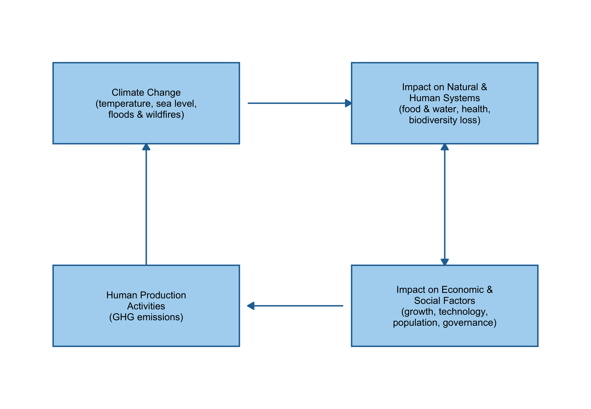
경제 → 기후: 온실가스 배출의 경제적 기원
전 지구 배출의 부문별 구조
온실가스는 경제의 어느 부문에서 나올까? 그림 2.4 은 2016년 전 지구 배출을 부문과 세부 활동별로 나눈 그림이다. 에너지 부문 안에서도 전력·열 생산, 산업의 에너지 사용, 건물의 에너지 사용, 수송이 큰 비중을 차지한다. 대략 전력 산업 26%, 산업의 에너지 사용 24.2%, 건물 17.5%, 수송 16.2% 정도다. 산림 벌채와 토지이용 변화도 숲과 토양에 저장된 탄소를 대기로 방출하는 중요한 배출원이다.
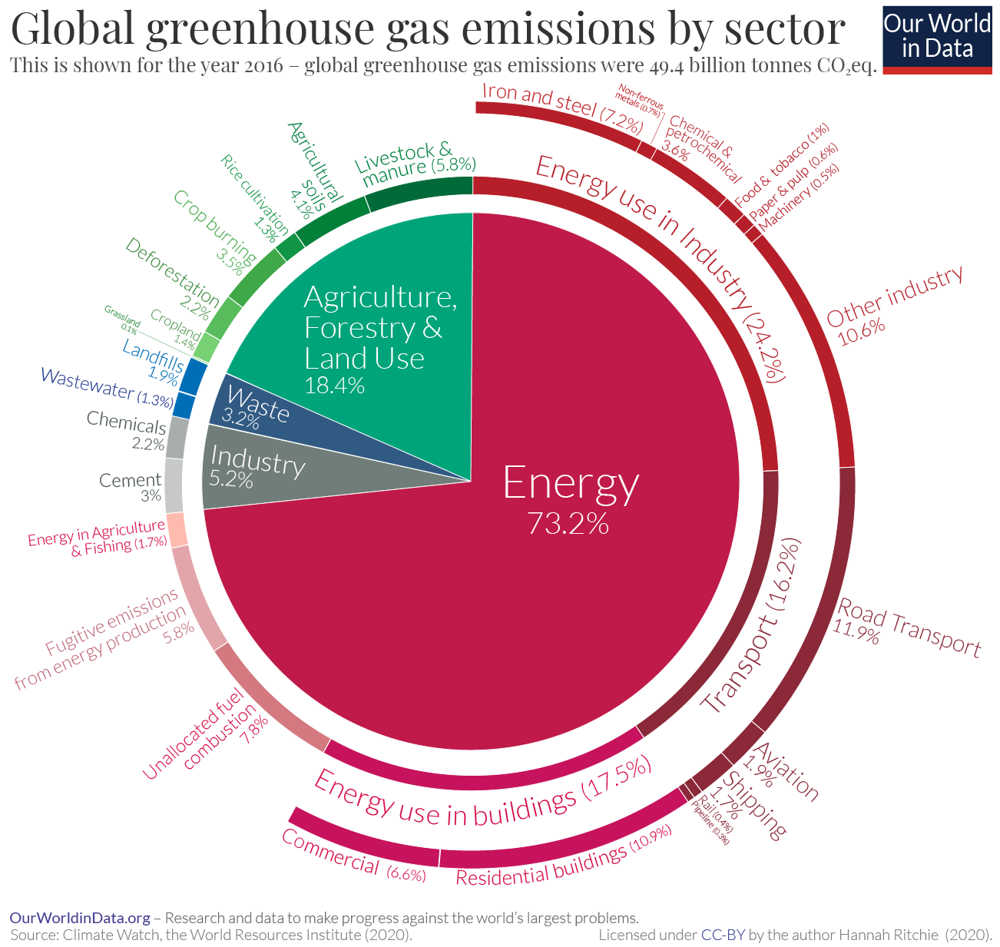
더 최근인 2023년 자료로 보면(그림 2.5), Our World in Data의 부문별 자료를 합한 세계 배출은 약 52GtCO₂eq이며, 에너지 관련 항목이 약 77.2%, 농업·토지이용이 12.9%, 산업공정이 6.1%, 폐기물이 3.7%를 차지한다. 반올림으로 합계에 차이가 생길 수 있다.
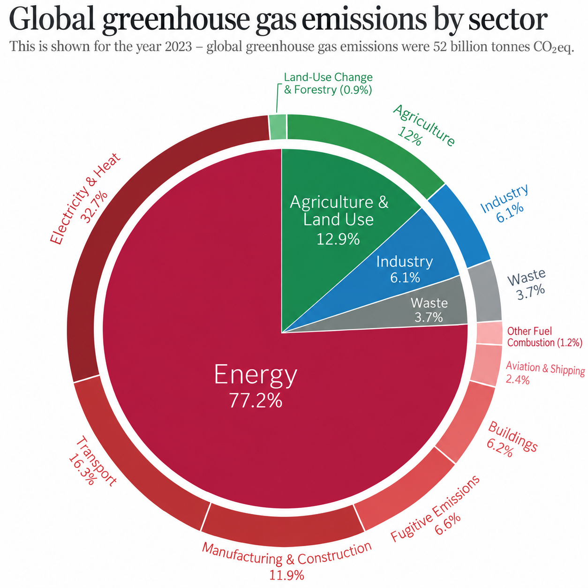
한국의 배출 구조
한국의 2023년 총배출량은 LULUCF(토지이용·토지이용변화·임업)를 제외한 국가 인벤토리 기준 707.2백만 tCO₂eq다. 부문별로는 에너지 77.1%, 산업공정·제품사용 17.2%, 농업 3.2%, 폐기물 2.6%다. 제조업 중심의 산업구조 때문에 1990년 이후 줄곧 에너지 부문이 74-81%를 차지해 왔다. 한국의 배출은 2018년 780.1백만 톤으로 정점을 찍은 뒤 감소하는 추세인데, 이는 뒤에서 볼 탈동조화의 실제 사례로 볼 수 있다.
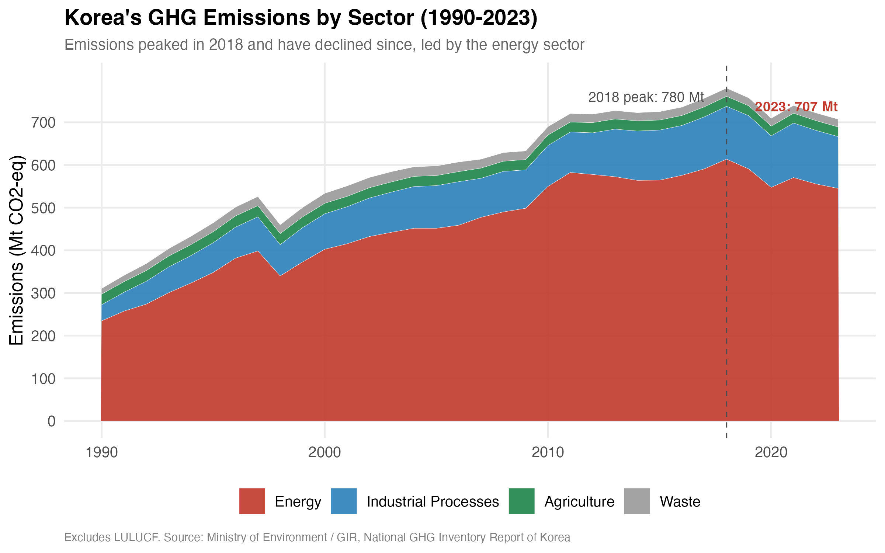
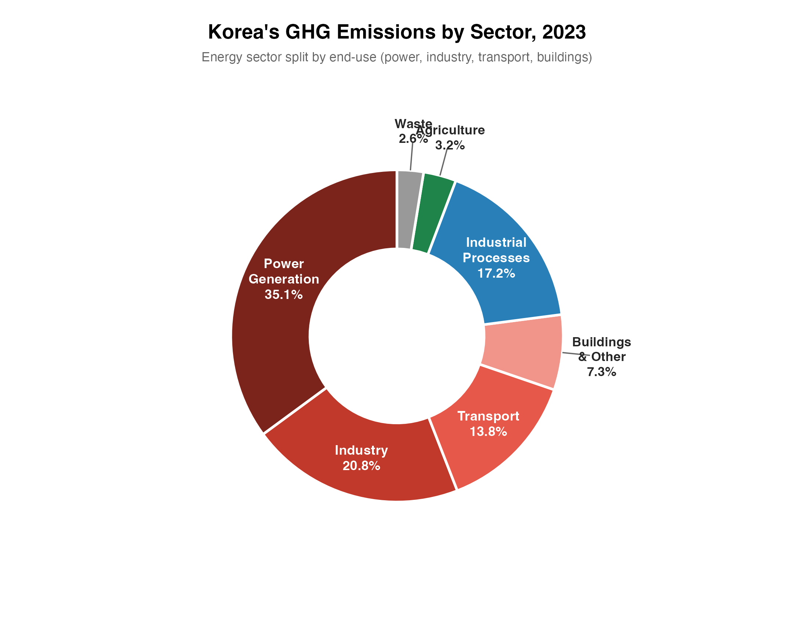
자료: OWID 부문별 배출, 온실가스종합정보센터 자료를 제공하는 공식 통계표. 세계와 한국 자료는 분류와 집계 범위가 완전히 같지 않으므로 두 그림의 비중 차이를 그대로 기술 효율의 차이로 해석하지 않는다. 전력 생산의 배출을 이용 부문에 재배분했는지, 토지이용을 포함했는지에 따라 비중이 달라진다. 과거 인벤토리와 비교할 때에도 같은 산정 지침을 사용해야 한다.
결국 온실가스 배출은 인구, 소득, 에너지 사용, 에너지원 선택이라는 경제적 변수들의 산물이다. 이 관계를 체계적으로 분해하는 도구가 카야 항등식이다.
카야 항등식
카야 항등식(Kaya Identity)은 CO₂ 배출량을 네 요인의 곱으로 분해한다.
\[\text{CO}_2 = \underbrace{\frac{\text{CO}_2}{E}}_{\text{탄소집약도}} \times \underbrace{\frac{E}{\text{GDP}}}_{\text{에너지집약도}} \times \underbrace{\frac{\text{GDP}}{P}}_{\text{1인당 소득}} \times \underbrace{P}_{\text{인구}}\]
| 요인 | 의미 | 무엇을 반영하는가 |
|---|---|---|
| 탄소집약도 \((\text{CO}_2/E)\) | 에너지 1단위당 배출되는 CO₂ | 에너지원의 청정도(석탄 vs. 재생에너지) |
| 에너지집약도 \((E/Y)\) | GDP 1단위를 만드는 데 쓰는 에너지 | 효율성(기술 수준, 산업구조) |
| 1인당 소득 \((Y/P)\) | 국민 1인이 누리는 소득 | 생활 수준 |
| 인구 \((P)\) | 사람 수 | 배출의 규모 그 자체 |
네 개의 다이얼: 어느 것을 돌릴 것인가
카야 항등식은 배출을 줄이는 경로가 네 가지임을 보여준다. 마치 네 개의 다이얼 가운데 하나 이상을 돌려 배출을 낮추는 것과 같다. 탄소집약도를 낮추거나(재생에너지 전환), 에너지 효율을 높이거나(에너지집약도 감소), 소득 성장을 억제하거나, 인구를 줄이는 것이다.
그러나 현실에서 어떤 사회도 소득 감소나 인구 감소를 기후정책으로 선택하지 않는다. 역사에서 “성장 둔화 → 배출 감소”가 실제로 나타난 사례를 보면 그 이유가 분명해진다.
- 중국의 한 자녀 정책(1979-2015): 인구 증가율이 급락했지만, 인권 침해 논란과 함께 이후 고령화와 인구 감소라는 부작용을 낳았다.
- 소련 붕괴(1991년 전후): 경제 붕괴로 GDP와 배출이 함께 급감했다. 그러나 이는 의도된 정책이 아니라 경제 파탄의 부산물이었다.
- 한국 외환위기(1997-98): 성장률이 급락하자 배출이 일시적으로 줄었지만, 위기를 극복하자 곧바로 반등했다.
역사적인 “성장 둔화 → 배출 감소”는 대부분 강압적 인구정책이나 경제 위기의 부산물이었을 뿐, 자발적 기후정책이 아니었다. 그래서 기후정책은 주로 탄소집약도와 에너지집약도라는 두 다이얼을 돌리는 데 집중한다.
탈성장 논쟁: 세 번째 다이얼을 돌리자는 주장
앞의 세 사례는 모두 비자발적인 성장 둔화였다. 그런데 성장 억제 자체를 자발적인 기후정책으로 삼아야 한다고 주장하는 학파도 있다. 이를 탈성장(degrowth)이라 한다.
대표적인 탈성장 경제학자 제이슨 히켈(Jason Hickel)은 『적을수록 풍요롭다(Less is More)』에서 하나의 사고실험을 제시한다. 내일 당장 핵융합 기술이 완성되어 무한한 청정에너지를 쓸 수 있게 되었다고 하자. 그러면 우리는 그 에너지로 무엇을 할까? 히켈의 답은, 지금 화석연료로 하는 일을 그대로 더 많이 하게 된다는 것이다. 숲을 더 많이 개간하고, 물고기를 더 많이 잡고, 광물을 더 많이 캐고, 도로를 더 많이 짓고, 쓰레기를 더 많이 버리게 된다. 히켈의 요지는, 청정에너지로 화석연료만 대체해도 같은 방식의 성장이 계속되면 생태계 파괴는 멈추지 않는다는 것이다. 문제는 에너지원이 아니라 성장 그 자체라는 주장이다.
이에 대해 『어번던스(Abundance)』(2025)의 저자 에즈라 클라인(Ezra Klein)과 데릭 톰슨(Derek Thompson)은, 청정에너지만으로는 부족하다는 히켈의 문제의식에는 공감하면서도 탈성장을 실제 정책으로 밀어붙였을 때의 정치적 위험을 지적한다. 그들의 논지를 요약하면 이렇다. 탈성장 구상이 실패했을 때의 대가는 기후 목표를 조금 빗나가는 데 그치지 않는다. 풍부하고 값싼 에너지를 약속하며 화석연료 개발을 밀어붙이는 포퓰리스트 정치인들에게 힘을 실어 주고, 기후변화를 걱정하는 정치 세력에 대한 신뢰를 무너뜨릴 수 있다는 것이다.
이 논쟁은 앞의 역사적 사례와 같은 결의 교훈을 준다. 성장을 억제하려는 시도가 실패했을 때 생기는 정치적 반작용 - 정책 신뢰의 붕괴, 반대 세력의 강화 - 이 오히려 감축 자체를 후퇴시킬 수 있다. 여러분은 어느 쪽 주장이 더 설득력 있다고 생각하는가? 이 질문에는 사실의 문제(청정에너지가 얼마나 빨리 싸질 것인가)와 가치의 문제(성장과 생태 보전 가운데 무엇을 우선할 것인가)가 함께 섞여 있다. 이 장 뒷부분에서 다룰 서술적·규범적 질문의 구분이 이 논쟁을 정리하는 데 도움이 된다.
카야 항등식을 증가율로 표현하기
곱셈으로 표현된 항등식은 증가율로 바꾸면 훨씬 다루기 쉬워진다. 항등식 양변에 로그를 취하면 곱이 합으로 바뀐다.
\[\ln \text{CO}_2 = \ln\frac{\text{CO}_2}{E} + \ln\frac{E}{Y} + \ln\frac{Y}{P} + \ln P\]
그리고 임의의 변수 \(X\)에 대해 \(\ln X\)를 시간에 대해 미분한 값은 정확히 \(X\)의 (연속시간) 증가율과 같다.
\[\frac{d\ln X}{dt} = \frac{1}{X}\frac{dX}{dt} = \frac{\dot X}{X}\]
여기서 \(\dot X\)는 \(X\)를 시간에 대해 미분한 값, 즉 단위 시간당 변화량이다. 이를 \(X\)로 나눈 것이 변화율, 곧 증가율이다. 따라서 위 로그식의 양변을 시간에 대해 미분하면, 배출 증가율을 네 요인의 증가율 합으로 분해할 수 있다.
\[\frac{\dot{\text{CO}_2}}{\text{CO}_2} = \underbrace{\frac{d(\text{CO}_2/E)/dt}{\text{CO}_2/E}}_{\text{탄소집약도 증가율}} + \underbrace{\frac{d(E/Y)/dt}{E/Y}}_{\text{에너지집약도 증가율}} + \underbrace{\frac{d(Y/P)/dt}{Y/P}}_{\text{1인당 소득 증가율}} + \underbrace{\frac{\dot{P}}{P}}_{\text{인구 증가율}}\]
여기서 \(P\)는 인구, \(Y\)는 GDP, \(E\)는 1차 에너지 공급량이다. 이 식은 매우 직관적이다. 예컨대 인구가 연 1%, 1인당 소득이 연 3% 늘어도 에너지집약도와 탄소집약도가 각각 연 2%씩 떨어지면 배출은 거의 늘지 않는다.
역사적으로 에너지집약도(\(E/Y\))는 꾸준히 하락해 왔다. 그러나 소득과 인구 성장이 에너지 효율 개선을 상쇄하여 총배출량은 증가해 왔다. 탄소중립을 달성하려면 탄소집약도(\(\text{CO}_2/E\))의 빠른 하락, 즉 에너지 전환이 불가피하다. 다른 세 항은 정책으로 쉽게 되돌리기 어렵기 때문이다. 이는 저탄소 전력, 효율 개선, 수요 변화, 공정 혁신 등 여러 경로를 함께 검토할 이유가 된다. 수소의 기후 효과도 생산 방식에 따라 다르다.
1장에서 살펴본 SSP 시나리오들도 결국 이 네 성장률에 대한 서로 다른 가정의 조합이다. 예컨대 SSP1(지속가능성)은 완만한 인구 증가와 빠른 탈탄소화(탄소집약도 급락)를 가정하는 반면, SSP5(화석연료 기반 개발)는 높은 소득 성장을 화석연료 집약적 에너지로 뒷받침한다고 가정한다. 시나리오마다 다른 것은 사실 카야 항등식 네 요인의 미래 궤적에 대한 가정이다.
한국과 세계의 카야 분해
한국의 실제 통계로 카야 항등식 요인을 분해하면 소득 성장과 효율 개선의 상쇄 관계를 확인할 수 있다(그림 2.8). 인구·GDP는 국가 온실가스 인벤토리와 한국은행·통계청 자료를, 1차에너지공급은 에너지경제연구원(KESIS) 자료를, CO₂ 배출량은 국가 온실가스 인벤토리의 에너지 부문 배출량을 사용했다. 1995년을 100으로 놓고(두 자료의 공통 구간인 1995-2023년) 각 요인의 변화를 지수화하면, 에너지집약도(\(E/Y\))는 꾸준히 낮아졌지만 1인당 소득(\(Y/P\))이 그보다 빠르게 상승하면서 CO₂ 배출량을 위로 끌어올렸음이 한눈에 드러난다.
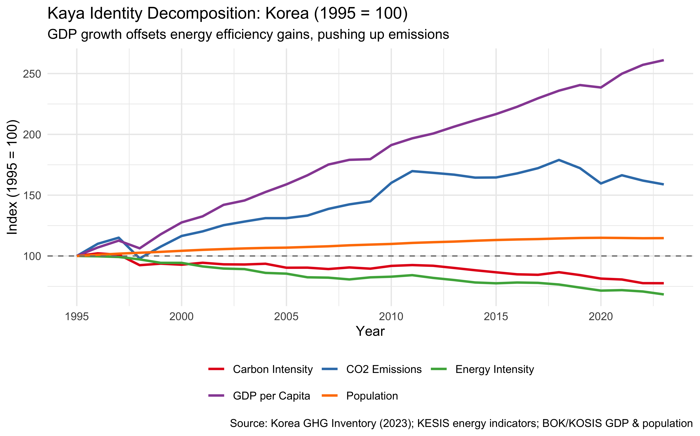
한국의 카야 분해가 특이한 것인지, 세계 평균과 비교해 보면 더 분명해진다(그림 2.9, 그림 2.10). 세계 평균은 1965년 이후 완만하게 증가한 반면, 한국은 1인당 소득과 CO₂ 배출이 60년간 20배 넘게 급증했다. 압축성장을 겪은 한국의 카야 분해가 세계 평균과 크게 다른 이유다.
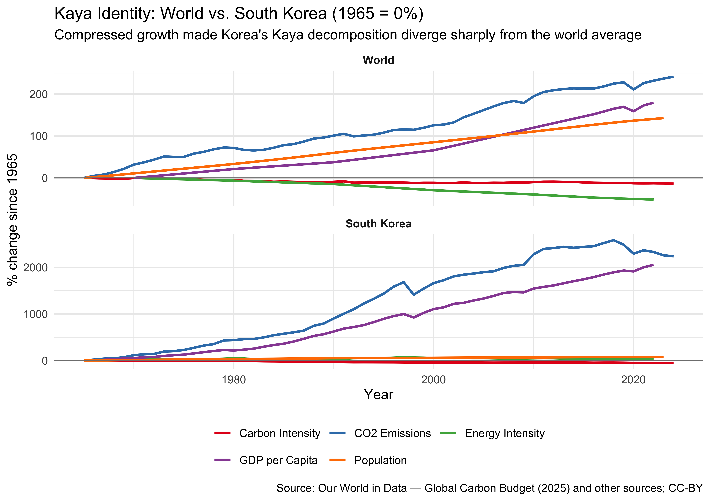
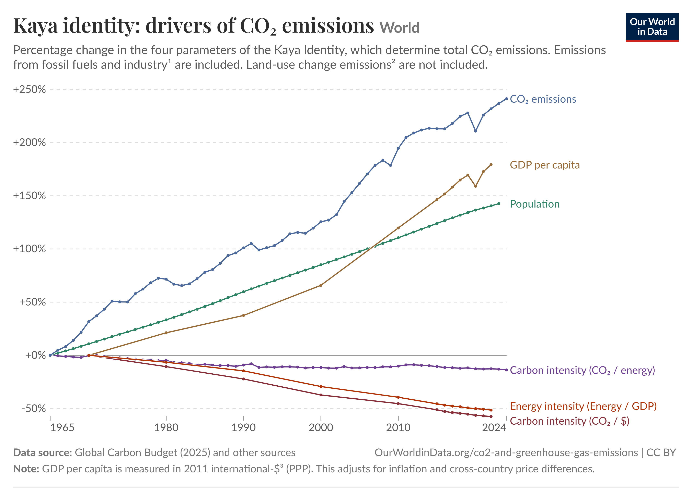
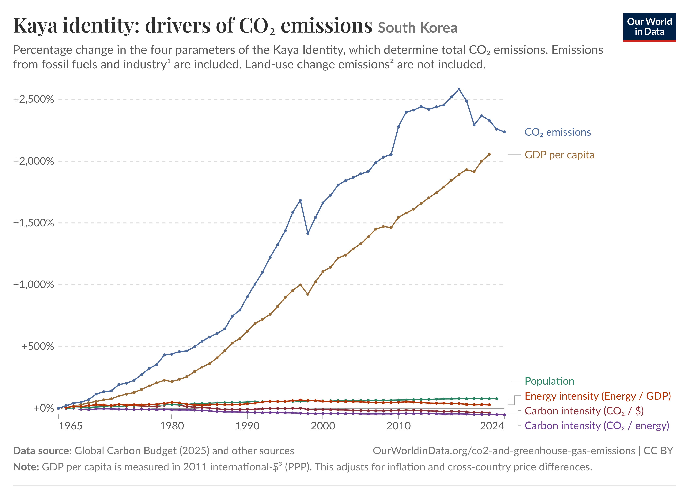
소득과 배출: 국가 간 비교
국가들을 한 그림에 놓고 보면(그림 2.11) 대체로 소득이 높을수록 1인당 배출량도 많다. 그러나 비슷한 소득 수준에서도 배출은 크게 갈린다. 수력 등 청정 전원이 풍부한 노르웨이와 화석연료 의존도가 높은 사우디아라비아의 대비가 대표적이다.
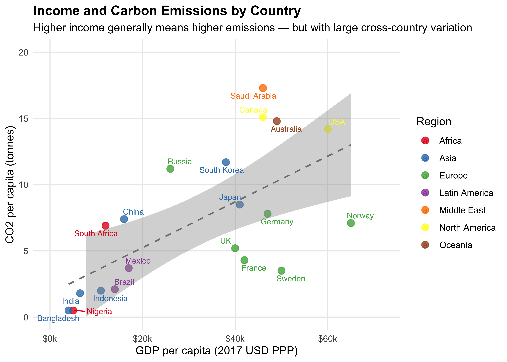
소득만으로 국가의 배출을 설명할 수는 없다. 기후, 산업구조, 교통 체계, 에너지원, 무역과 정책이 함께 작용한다. 같은 소득을 유지하면서 에너지집약도와 탄소집약도를 바꾸는 것이 가능한지는 이러한 구체적 조건에 달려 있다.
환경 쿠즈네츠 곡선(EKC) 가설
경제 성장과 환경 오염의 관계에 관한 또 다른 주요 가설은 환경 쿠즈네츠 곡선(Environmental Kuznets Curve, EKC)이다. 원래 쿠즈네츠 곡선은 경제학자 사이먼 쿠즈네츠가 소득 불평등이 경제발전 초기에는 커졌다가 이후 줄어든다고 주장한 데서 나왔는데, 이를 환경에 적용한 것이다. 이 가설은 소득과 오염의 관계가 역-U자형을 보인다고 주장한다. 저소득 단계에서는 성장할수록 오염이 증가하지만, 일정 소득 수준(전환점)을 넘으면 오히려 오염이 감소한다는 것이다.
\[Z = \alpha + \beta_1 \cdot Y + \beta_2 \cdot Y^2 + \varepsilon \quad (\hat\beta_1 > 0, \hat\beta_2 < 0)\]
여기서 \(Z\)는 오염 수준(오염물질 배출량 또는 농도), \(Y\)는 소득이다. \(\beta_1>0\)이고 \(\beta_2<0\)이면 \(Z\)는 \(Y\)의 이차함수로서 위로 볼록한 모양이 되고, 전환점은 \(Y^*=-\beta_1/(2\beta_2)\)에서 나타난다.
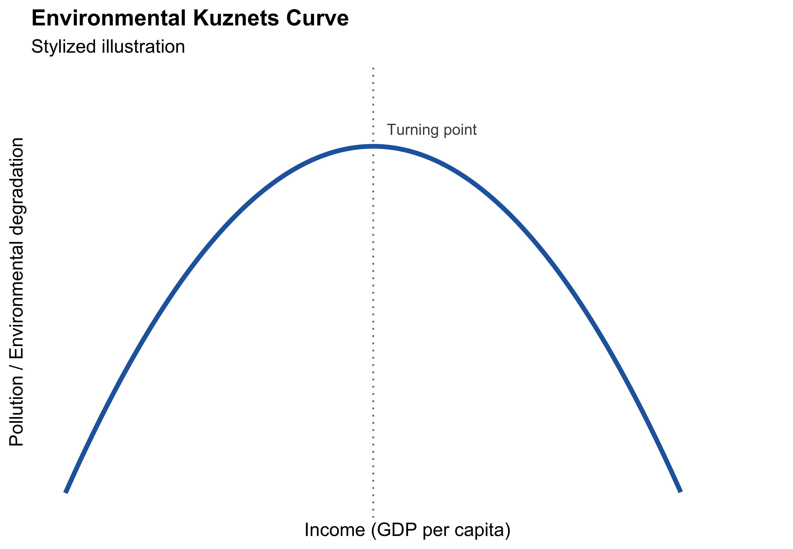
EKC 가설이 성립하는 배경으로는 다음이 제시된다.
- 환경 수요의 증가: 소득이 높아질수록 주민들이 더 나은 환경을 요구하고 정치적으로 환경 규제를 지지한다. 깨끗한 환경은 일종의 ’사치재’처럼 소득과 함께 수요가 늘어난다.
- 산업구조의 변화: 서비스업 비중이 높아지며 오염 집약적인 제조업의 비중이 줄어든다.
- 기술의 발전: 더 나은 기술과 효율적인 생산 방식이 도입된다.
EKC 가설의 한계
그러나 CO₂ 배출에는 EKC 가설이 잘 성립하지 않는다. 이유는 세 가지다.
- 탄소 누출(carbon leakage): 선진국의 배출 감소 가운데 일부는 오염 집약적 산업을 개발도상국으로 옮긴 결과일 수 있다. 이 경우 생산 기준 배출은 줄어도 그 나라의 소비가 유발한 배출, 그리고 전 지구 배출은 줄지 않는다.
- 정책의 역할: 역사적으로 선진국의 배출 감소는 소득 증가의 자연스러운 결과라기보다 명시적인 기후정책 덕분인 경우가 많다.
- 전 지구적 저량 문제: 앞에서 본 국지적·전 지구적 오염물질의 구분을 떠올려 보자. 지역 오염은 그 피해를 겪는 주민들이 부유해지면 규제를 요구해 줄어들 수 있다. 그러나 CO₂의 피해는 전 세계와 미래 세대에 흩어지므로, 소득이 오른 주민들이 스스로 줄일 유인이 약하다. 더구나 기후에 중요한 것은 대기 중에 누적된 CO₂이므로, 배출이 언젠가 줄기 시작한다는 것만으로는 충분하지 않다.
상대적 탈동조화와 절대적 탈동조화
탈동조화(decoupling)란 경제 성장과 온실가스 배출의 연결 고리가 약해지는 현상이다.
- 상대적 탈동조화(relative decoupling): 배출량은 계속 증가하지만 증가 속도가 GDP 성장률보다 느린 경우다. 즉 GDP 단위당 배출량(배출집약도)이 감소하는 상태다.
- 절대적 탈동조화(absolute decoupling): 경제가 성장하는 동시에 배출량 자체가 감소하는 경우로, 기후 목표 달성을 위해 필요한 상태다.
현황을 보면, 대부분의 선진국은 상대적 탈동조화에 도달했고, 영국·독일·스웨덴 등 일부 국가는 절대적 탈동조화도 달성했다. 앞에서 본 한국의 2018년 이후 배출 감소도 같은 방향의 변화다. 그러나 전 지구 배출량은 여전히 증가 추세다.
탈동조화를 평가할 때에는 국가, 기간, 온실가스의 범위, 생산 기준인지 소비 기준인지를 함께 표시해야 한다. 그림 2.13 은 실제 국가의 관측값이 아닌 개념도이며, 세 가지 경로를 비교하기 위해 그린 것이다.
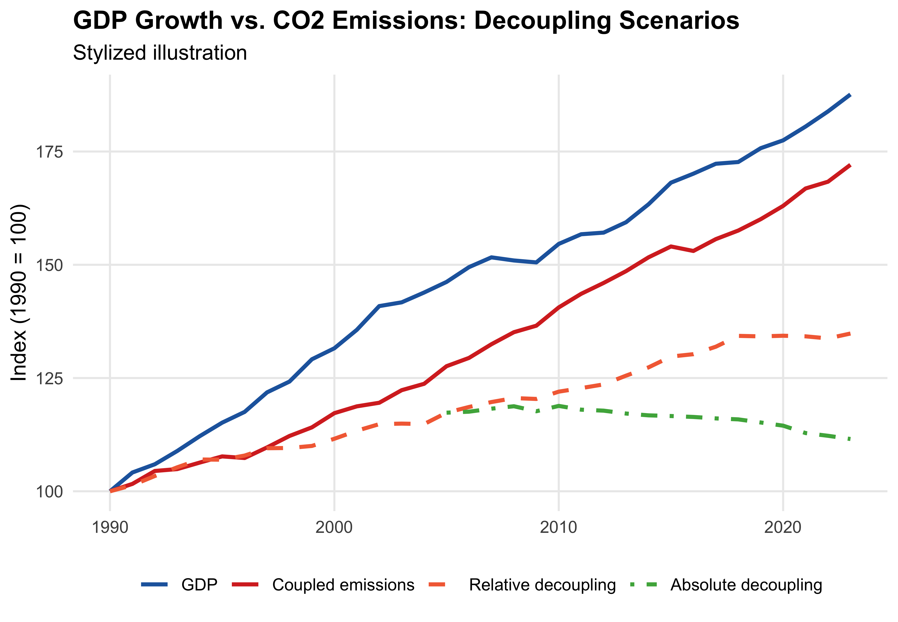
두 힘의 줄다리기: 성장 효과와 기술·구성 효과
이 절 전체가 보여주는 배출-소득 관계는 결국 두 힘의 줄다리기로 요약된다.
- 성장 효과(scale effect): 경제가 커질수록 에너지 사용과 배출이 늘어나는 힘
- 기술·구성 효과(technique and composition effect): 효율 개선, 산업구조 변화, 청정기술 도입으로 배출을 줄이는 힘
카야 항등식의 에너지집약도·탄소집약도 하락이 바로 이 기술·구성 효과의 다른 이름이다. 이 두 힘의 상대적 크기가 한 나라가 상대적 탈동조화에 머무를지 절대적 탈동조화로 나아갈지를, 그리고 궁극적으로 기후정책의 경제적 비용을 결정한다.
기후 → 경제: 되돌아오는 충격
이제 고리의 반대편, 기후변화가 다시 경제에 남기는 충격을 살펴보자. 기후변화는 단순히 환경 문제가 아니라 거시경제 변수에 직접 영향을 미친다. 대표적인 경로는 네 가지다.
농업 생산성. 기온 상승과 강수 패턴 변화는 작물 수확량을 바꾸고, 이는 식량 가격과 농촌 소득에 영향을 준다. 특히 열대·아열대 지역의 개발도상국에서 피해가 집중된다. 다만 순효과는 논쟁적이다. 농민의 적응을 감안하면 온건한 온난화는 순편익일 수도 있다는 Mendelsohn, Nordhaus & Shaw(1994)의 리카디안 연구와, 특정 기온을 넘는 고온이 비선형적으로 큰 피해를 준다는 Schlenker & Roberts(2009)의 반론이 맞선다(5장에서 자세히 다룬다).
노동 생산성. Dell, Jones, and Olken(2012)의 연구에 따르면 기온이 1°C 상승할 때 개발도상국의 GDP 성장률이 약 1.2%p 하락한다. 고온 환경에서 옥외 노동의 생산성이 급감하고, 사람의 집중력과 건강도 나빠지기 때문이다.
인프라와 자본. 해수면 상승, 홍수, 폭풍 강도 증가는 해안 인프라, 부동산, 제조 설비를 위협한다. 이는 자본 스톡의 감가상각을 가속화한다. 앞에서 본 마린시티와 맨해튼의 방재 투자는 바로 이 경로에 대한 대응이다.
이주와 갈등. 기후 충격이 심각한 지역에서는 인구 이동이 촉발되며, 이는 사람들을 받아들이는 지역의 노동시장, 사회 서비스, 정치적 안정에 영향을 미친다.
이 네 가지 경로 하나하나가 그림 2.3 에서 “자연·인간 시스템에 대한 영향”이 “경제·사회적 요인에 대한 영향”으로 넘어가는 구체적 메커니즘이다. 그리고 그 경제적 요인은 다시 미래의 생산활동과 배출 결정에 영향을 미치면서 고리를 닫는다.
경제학은 기후변화에서 무엇을 묻는가
앞서 본 고리는 기후변화가 왜 자연과학인 동시에 경제학의 문제인지를 보여준다. 기후변화를 일으키는 것도, 그 피해를 감당하는 것도, 그리고 그것을 해결할 수단을 선택하는 것도 결국 인간의 행동과 선택이다. 희소한 자원을 놓고 인간이 내리는 선택과 그 결과를 분석하는 일이야말로 경제학의 본령이다.
같은 현실, 다른 질문
기후과학자와 기후경제학자는 같은 지구, 같은 데이터를 바라본다. 그러나 두 사람이 그 앞에서 던지는 질문은 사뭇 다르다.
| 기후과학자 | 기후경제학자 | |
|---|---|---|
| 묻는 것 | 물리적 인과관계 | 인간 사회에 대한 결과와 대응 |
| 질문의 예 | CO₂ 농도가 두 배가 되면 기온은 몇 도 오르는가? 해수면은 얼마나 상승하는가? | 그 피해는 화폐로 얼마인가? 감축에 얼마를 써야 하는가? 부담은 누가 지는가? |
| 답하는 방법 | 원칙적으로 관측과 물리 법칙으로 확정 가능 | 사실 분석과 함께 가치 판단이 필요한 경우가 많음 |
요컨대 과학자가 “무슨 일이 일어나는가”를 묻는다면, 경제학자는 “그래서 우리는 무엇을, 얼마나, 어떻게 해야 하는가”를 묻는다.
기후경제학의 세 가지 핵심 질문
이 세 질문은 이 책 전체를 떠받치는 뼈대다. 서로 연결되지만 구분해서 답해야 한다. 감축의 총량에는 비용과 편익의 비교가, 수단 선택에는 기술·정보·제도에 대한 판단이, 부담의 배분에는 형평성과 정치적 수용성에 대한 판단이 필요하다.
있는 그대로의 세계와 있어야 할 세계
경제학이 던지는 질문은 성격이 전혀 다른 두 종류로 나뉜다. 이 구분을 놓치면 기후경제학의 숱한 논쟁이 왜 그토록 좁혀지지 않는지 이해할 수 없다.
첫째는 서술적(positive) 경제학으로, 세계가 실제로 어떻게 작동하는지를 분석한다. “탄소세를 1톤당 5만 원 부과하면 휘발유 소비는 몇 퍼센트나 줄어드는가?”, “경제가 성장하면 온실가스 배출은 반드시 함께 늘어나는가?”와 같은 물음이 여기에 속한다. 이런 질문은 원칙적으로 데이터와 모형으로 검증할 수 있는 사실의 문제다. 답이 틀렸다면 증거를 들어 반박할 수 있다.
둘째는 규범적(normative) 경제학으로, 세계가 어떠해야 하는지를 판단한다. “탄소세는 얼마로 정해야 옳은가?”, “우리 세대는 아직 태어나지도 않은 미래 세대를 위해 지금 얼마를 희생해야 하는가?”와 같은 물음이 그것이다. 이런 질문은 사실을 아무리 정확히 안다 해도 그것만으로는 답할 수 없다. 그 밑바닥에 무엇이 공정한가, 미래를 얼마나 중시할 것인가 같은 가치 판단이 깔려 있기 때문이다.
이 구분이 왜 결정적인가? 기후정책을 둘러싼 가장 유명한 대립인 스턴과 노드하우스의 논쟁조차, 상당 부분 데이터의 다툼이라기보다 가치의 다툼이기 때문이다. 경제학은 “미래 세대를 얼마나 중요하게 여겨야 하는가”라는 물음에 스스로 정답을 제시하지 못한다. 다만 서로 다른 가치 선택이 각각 어떤 정책 결론으로 이어지는지를 투명하게 드러내 보여줄 뿐이다. 경제학이 가진 이 힘과 한계를 함께 이해하는 것이 기후경제학을 올바르게 읽는 출발점이다.
경제학은 기후변화를 어떻게 사고해 왔는가
기후변화에 대한 경제학적 사고는 최근에 갑자기 등장한 것이 아니다. 그 뿌리는 100년 전으로 거슬러 올라간다. 그 계보 위에서 네 명의 핵심 인물이 오늘날 우리가 쓰는 개념의 틀을 하나씩 놓았다.
| 시기 | 인물 | 핵심 기여 |
|---|---|---|
| 1920 | 아서 피구(Arthur Pigou) | 외부성 개념, 피구세 |
| 1970년대~ | 윌리엄 노드하우스(William Nordhaus) | 통합평가모형(DICE), 탄소의 사회적 비용 |
| 2006 | 니컬러스 스턴(Nicholas Stern) | 스턴 리뷰, 즉각적·대규모 감축의 경제적 정당화 |
| 2009 | 마틴 바이츠먼(Martin Weitzman) | 두꺼운 꼬리(fat tail)와 파국적 위험 |
피구: 외부성과 피구세
출발점은 아서 피구(Arthur Pigou)다. 그는 1920년 저서 『후생경제학(The Economics of Welfare)』에서, 공장의 매연처럼 한 경제주체의 행동이 아무런 대가 없이 타인에게 피해를 입히는 현상을 외부성(externality)으로 개념화했다 (Pigou 1920년). 시장에 맡겨두면 이런 피해는 가격에 반영되지 않아 과잉 생산·과잉 배출로 이어진다. 피구의 처방은 명료했다. 그 피해액만큼 세금을 물려 비용을 유발자에게 ’내부화’시키라는 것이다. 오늘날 탄소세의 이론적 원형이 바로 이 피구세(Pigouvian tax)다(4장, 8장). ’기후변화’라는 말이 쓰이기 반세기도 더 전에, 문제를 다룰 개념적 도구는 이미 마련되어 있었던 셈이다.
노드하우스: 기후를 경제 모형 안으로
피구가 도구를 벼렸다면, 윌리엄 노드하우스(William Nordhaus)는 그것을 기후 문제에 정면으로 적용했다. 그는 1970년대부터 기후를 경제 모형 안으로 끌어들여, 지구 평균기온 상승을 산업화 이전 대비 2°C 이내로 억제해야 한다는 기준을 일찍이 제시했다. 나아가 그는 탄소 순환, 기온 변화, 경제 성장, 기후 피해를 하나의 방정식 체계로 엮은 통합평가모형(Integrated Assessment Model, IAM)인 DICE 모형을 개발했다. 이 모형은 “이산화탄소 1톤을 더 배출할 때 사회가 치르는 피해는 얼마인가”라는 물음, 즉 탄소의 사회적 비용(social cost of carbon)에 구체적 숫자로 답하려는 최초의 본격적 시도였다. 노드하우스는 이 공로로 2018년 노벨 경제학상을 받았다 (Nordhaus 2017년).
스턴: 지금 당장, 과감하게
노드하우스의 모형이 곧 합의를 뜻한 것은 아니었다. 니컬러스 스턴(Nicholas Stern)은 2006년 「스턴 리뷰」에서 기후변화의 피해가 노드하우스의 추정보다 훨씬 크며, 따라서 지금 당장 과감하게 감축하는 것이 경제적으로도 정당하다고 주장했다 (Stern 2007년). 이 보고서는 기후 문제를 학계의 울타리를 넘어 대중과 정치의 의제로 단숨에 끌어올렸다.
바이츠먼: 평균에서 꼬리로
마지막으로 마틴 바이츠먼(Martin Weitzman)은 논쟁의 초점을 ’평균적 피해’에서 ’최악의 가능성’으로 옮겼다. 그는 발생 확률은 낮지만 일어나면 파국적인 결과, 이른바 두꺼운 꼬리(fat tail)가 기후 문제의 핵심이라고 보았다 (Weitzman 2009년). 1장에서 익힌 분포의 언어로 말하면, 기후 위험의 본질은 분포의 한가운데(평균)가 아니라 좀처럼 얇아지지 않는 꼬리에 있다는 것이다(9장).
노드하우스와 스턴: 무엇이 달랐나
두 사람은 같은 과학, 비슷한 데이터를 보고도 정반대의 정책 결론에 이르렀다. 스턴은 즉각적·대규모 감축을, 노드하우스는 시간이 지날수록 강도를 높여 가는 점진적 접근을 지지했다. 이 차이의 핵심 가운데 하나는 할인율(discount rate), 즉 미래 세대의 후생을 현재 가치로 얼마나 깎아서 평가할 것인가라는 선택이었다.
- 미래를 거의 깎지 않으면(낮은 할인율) → 먼 미래의 피해가 현재에도 크게 계산되므로 지금 큰 비용을 치를 이유가 생긴다(스턴).
- 미래를 많이 깎으면(높은 할인율) → 먼 미래의 피해가 현재가치로는 작아져, 나중에 대응하는 편이 낫다는 계산이 나온다(노드하우스).
하나의 합의: “탄소에 가격을 매겨라”
경제학자들은 웬만한 문제에 대해서는 좀처럼 의견이 모이지 않는 것으로 유명하지만, 기후정책의 한 가지 처방에서만큼은 놀라울 만큼 한목소리를 낸다. 온실가스 배출에 가격을 매기라는 것이다. 2019년, 노벨상 수상자 28명을 포함한 3,600명이 넘는 미국 경제학자가 이례적으로 하나의 성명에 서명해 탄소세 도입을 촉구한 것이 그 상징적 장면이다 (Sterner 기타 2024년).
왜 하필 ’가격’인가? 시장경제에서 석유나 석탄 같은 사적 재화는 희소해지면 가격이 오르고, 그 신호에 따라 사람들이 알아서 덜 쓰고 대안을 찾는다. 그러나 대기가 이산화탄소를 흡수하는 능력 같은 공공재에는 이런 가격이 존재하지 않는다. 배출자가 자신이 일으키는 피해에 아무런 대가도 치르지 않으므로, 시장은 스스로 배출을 줄일 신호를 만들어내지 못한다. 피구가 100년 전에 지적했듯, 이 ’빠진 가격’을 정책으로 만들어 붙이는 것, 즉 탄소세나 배출권거래제가 시장실패를 바로잡는 가장 직접적인 방법이다.
“그냥 가격만 매기면 된다”의 함정
그러나 최근 경제학자들은 ’탄소에 가격을 매겨라’는 메시지가 지나치게 단순화되어 전달되어 왔다고 반성한다. 스테르너 등(Sterner et al., 2024)은 이를 경제학원론 수준의 “Econ 101” 처방이라 부르며, 현실은 그보다 복잡한 “Econ 102”를 요구한다고 지적한다 (Sterner 기타 2024년).
- 시장실패는 하나가 아니다. 기후 문제에는 탄소 외부성만 있는 것이 아니라, 청정기술에 대한 투자 부족, 낡은 기술에 갇혀 벗어나지 못하는 고착(lock-in) 등 여러 실패가 겹쳐 있다. 세금 하나만으로는 이 모두를 교정할 수 없어, 보조금·규제·연구개발 지원 같은 보완 수단이 함께 필요하다.
- 분배와 형평성이 걸려 있다. 탄소 가격은 소득에서 에너지 지출 비중이 큰 저소득층에 상대적으로 더 무거운 부담이 될 수 있다. 걷은 세수를 누구에게 어떻게 되돌려주느냐에 따라 정책의 공정성과 수용성이 크게 달라진다.
- 정치적 수용성이 관건이다. 2018년 프랑스에서 유류세 인상에 반대해 일어난 ‘노란 조끼(Gilets Jaunes)’ 시위처럼, 이론적으로 옳은 탄소세도 국민이 불공정하다고 느끼면 좌초한다. 정부에 대한 신뢰, 세수의 사용처, 도입 속도가 성패를 가른다.
요컨대 탄소 가격은 여전히 기후정책의 중심축이지만, 그것만으로 충분하지는 않다. “가격을 매겨라”는 출발점이지 종착점이 아니며, 이 책의 나머지 장들은 바로 그 ‘나머지’ - 어떻게 설계하고, 누가 부담하며, 어떻게 수용을 이끌어낼 것인가 - 를 다룬다.
기후변화 경제학의 주요 분석 도구
통합평가모형
통합평가모형(Integrated Assessment Model, IAM)은 기후 시스템과 경제 시스템을 하나의 모형 안에 결합한다. DICE(Dynamic Integrated model of Climate and the Economy, Nordhaus), PAGE, FUND 등이 대표적이다. IAM은 최적 배출 경로, 탄소의 사회적 비용(SCC), 기후 목표 달성 비용 등을 추정하는 데 사용된다. 그러나 피해함수의 불확실성, 할인율 가정에 대한 민감성, 티핑 포인트 포함 여부 등에서 한계를 갖는다(10장).
계량경제학적 접근
최근에는 기상 데이터와 경제 데이터의 패널을 활용한 계량경제학적 추정이 활발히 이루어지고 있다. 기온·강수량 변화가 농업 생산량, GDP 성장률, 범죄율, 건강 지표에 미치는 영향을 직접 추정한다. 날씨는 해마다 무작위에 가깝게 변동하므로, 같은 지역의 더운 해와 덜 더운 해를 비교하면 기온의 인과효과에 가까운 값을 얻을 수 있다는 것이 이 접근의 핵심 아이디어다.
이 접근은 관측자료와 식별 가정을 연결해 관계를 검증할 수 있다는 장점이 있다. 그러나 관측자료를 사용한다는 사실만으로 인과적 불확실성이 자동으로 낮아지는 것은 아니다. 또한 단기적인 날씨 충격에서 얻은 추정치로는 장기적·비선형적 변화나 사회의 적응을 포착하기 어렵다는 한계도 있다(5장).
비용-편익 분석
비용-편익 분석(Cost-Benefit Analysis, CBA)은 기후정책의 비용(감축 비용)과 편익(회피된 기후 피해)을 화폐 단위로 비교해 바람직한 정책 수준을 결정한다. SCC가 이 분석의 핵심 투입 변수가 된다. CBA는 경제적으로 일관성 있는 틀을 제공하지만, 생태계·건강·문화유산 같은 비시장 가치를 화폐로 환산하기 어렵고 형평성을 충분히 반영하지 못한다는 비판도 있다(7장).
이 책의 로드맵
| 부 | 장 | 내용 |
|---|---|---|
| 제II부 기후변화는 왜 경제 문제인가 | 3-4장 | 시장 효율성의 기초(3장) → 외부효과·공공재라는 시장실패로 진단(4장) |
| 제III부 기후변화의 비용과 편익 | 5-7장 | 기후 피해의 측정·가치평가와 SCC(5장), 감축비용(6장), 할인·세대 간 형평성과 비용-편익 분석(7장) |
| 제IV부 기후변화 해결을 위한 경제학적 접근 | 8장~ | 정책수단: 직접규제·탄소세·배출권거래제(8장), 불확실성(9장), 통합평가모형(10장), 이후 형평성, 적응, 행동경제학, 국제협력·기후금융, 녹색성장 |
3장과 4장은 기후 문제를 분석하는 데 필요한 경제학의 기본 도구를 정리한다. 3장은 시장균형, 잉여, 효율성과 형평성을 구분하고 감축량과 감축비용의 배분을 계산한다. 4장은 그 계산에 빠져 있던 외부비용과 공동편익을 넣어, 사적인 선택과 사회적으로 바람직한 선택이 어긋나는 이유를 분석한다. 실제 탄소가격이나 장기 감축 경로를 정하려면 피해와 비용의 추정, 시간과 불확실성에 관한 추가 분석이 필요하며, 이는 5-9장의 몫이다.
요약
- 오염물질의 두 유형. 국지적 오염물질은 피해가 배출원 인근에 집중되어 지역 규제로 대응할 수 있지만, CO₂ 같은 전 지구적 오염물질은 누적되어 전 세계에 피해를 주므로 국제 협력이 필요하다. 블랙카본은 체류시간은 짧지만 빙하의 알베도를 낮춰 전 지구적 영향을 미치는 경계 사례다.
- 경제학자의 시각. 기후변화는 배출의 피해에 가격이 매겨지지 않는 인센티브의 실패, 즉 시장실패다.
- 닫힌 고리. 인간의 생산활동이 온실가스 배출을 통해 기후를 변화시키고, 기후변화는 자연·인간 시스템을 거쳐 다시 경제·사회적 요인에 영향을 미치며, 그 영향은 미래의 생산활동으로 되먹임된다.
- 경제 → 기후. 카야 항등식은 배출을 인구, 소득, 에너지집약도, 탄소집약도로 분해한다. 현실의 정책은 탄소집약도와 에너지집약도에 집중한다. EKC는 성장이 오염 감소로 이어질 수 있음을 시사하지만 CO₂에는 직접 적용되지 않으며, 탈동조화는 성장 효과와 기술·구성 효과의 줄다리기가 실제로 어떻게 나타나는지를 보여준다.
- 기후 → 경제. 농업, 노동, 인프라·자본, 이주라는 채널로 고리가 닫힌다. 방파제 같은 적응 투자에는 분배와 도덕적 해이의 문제가 따른다.
- 경제학의 질문과 도구. 기후경제학은 얼마나, 어떻게, 누가 부담할 것인가를 묻는다. 서술적 질문과 규범적 질문을 구분해야 하며, 피구·노드하우스·스턴·바이츠먼으로 이어지는 계보 위에서 IAM, 계량경제 추정, 비용-편익 분석이 쓰인다. 핵심 쟁점인 할인율, 형평성, 불확실성은 순수한 경제 분석을 넘어 윤리적 판단을 포함한다.
생각해 볼 문제
- 탄소집약도를 낮추는 방법(에너지 전환)과 에너지집약도를 낮추는 방법(효율 개선)은 각각 어떤 장단점이 있는가? 두 경로의 정치경제학적 차이는 무엇인가?
- EKC 가설이 지역 대기오염에는 어느 정도 성립하지만 CO₂에는 그렇지 않은 이유를 시장실패의 관점에서 설명하라.
- 카야 항등식을 이용해 지난 30년간 한국의 CO₂ 배출 증가를 네 요인으로 분해해 보라. 어떤 요인이 증가를 주도했고, 어떤 요인이 상쇄했는가?
- 탈성장론자와 『어번던스』 저자들의 논쟁에서 사실(서술적)의 문제와 가치(규범적)의 문제를 각각 하나씩 찾아보라.
- 해안 방재 사업의 비용을 그 사업으로 보호받는 지역 주민이 더 많이 부담하도록 하면 어떤 장점과 문제가 생기는가?